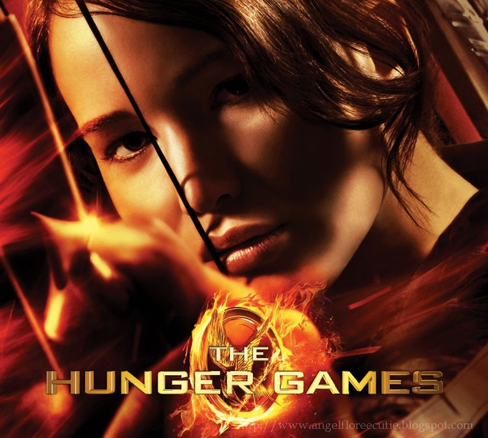

A dystopian sci-fi tale of courage, survival, and rebellion.
The Hunger Games is set in the futuristic, dystopian nation of Panem. The government selects two teenagers from each district to participate in a televised fight to the death known as the Hunger Games. This sci-fi thriller explores themes like surveillance, rebellion, poverty, and survival in a high-tech yet broken world.
The brave girl from District 12 who volunteers in place of her sister. Katniss becomes a symbol of hope and rebellion against the Capitol.
Peeta is Katniss's fellow tribute, known for his kindness and strength. His love for Katniss adds emotional depth to their fight for survival.
A young, sweet tribute from District 11. Rue's alliance with Katniss and her tragic fate spark a powerful emotional reaction in viewers and characters alike.
Katniss’s best friend and hunting partner from District 12. Though he doesn't enter the games, he plays a major role in her life and the growing rebellion.
The colorful, overly formal escort for District 12 tributes. Effie provides comic relief, fashion flair, and eventually shows a deeper loyalty to Katniss and Peeta.
© 2025 Ikram Ahmed | Fan Page of The Hunger Games